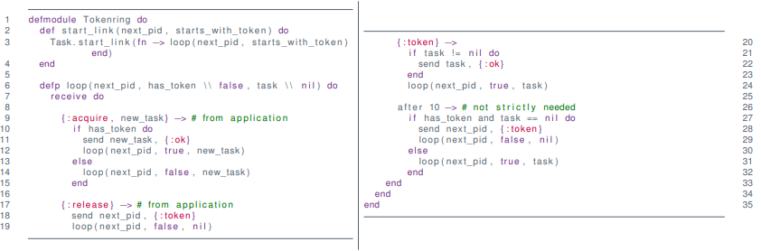

Mutual Exclusion (Mutex) and Election¶
Mutual exclusion algorithms ensures that one and only one process can access a shared resource at any given time.
Examples
- Printing
- Using Coffee Machine
- Writing a file
- Changing an actuator
- Arm of robot
- Wireless communication
- Wired communication
System Model¶
What is a (computer science) process?
A process p=(S,s_i, M, \to) in a set of processes p\in P has
- a set of states S
- an initial state s_i\in S
- a set of messages M
- including the empty message \epsilon \in M
- and a transition function \to \subseteq S \times M \mapsto S \times 2^{P\times M}
Example¶
1 2 3 4 5 6 7 8 9 10 11 12 13 14 15 16 17 | |
- S=\{loop(output\_ping = true), loop(output\_ping = false)\}
- s_i=\{(output\_ping = false\}
- M=\{:ping\}
- \to\ = recieve
Events¶
- Computation is fast
- Communication is slow
Measure of Performance
Time is counted in number of messages/events
Network Models¶
Asynchronous
- Arbitrary delays
- Unknown processing time
Synchronous
- Known delays
- or hard limits of them
- Known drift

Figure: Properties of the network can lead to confusion for Alice
Assumptions¶
- Processe have Crash Failures
- Stays dead
- Direct Communication
- Transparent routing
- No forwarding
- Reliable Communication
- Synchronous
- Delivery within fixed timeframe
- Asynchronous
- Delivery at at some point
- Underlying protocol handles re-transmission etc.
- Partitions are fixed eventually
- Synchronous

Mutex Algorithms¶
Requirements¶
- Safety
- at most one is given access
- Liveness
- Requests for access are (eventually) granted
- Ordering/Fairness
- A request A happened-before request B \Rightarrow grant A before B
Properties¶
- Fault tolerance
- What happens when a process crashes?
- Performance
- Message Complexity
- How many messages to get mutex?
- How many to release?
- Client Delay
- Time from a request R to a grant of R
- Synchronization Delay
- Time from a release of R to a grant of the next request Q
- Message Complexity
Centralized Algorithm¶
- Assume one external coordinator
- Coordinator has ordered queue
- Ask coordinator for access
Code¶

Properties¶
Requirements
- Safe: Yes
- Liveness: Yes
- Ordering: No!
Properties
- Client Delay
- Entry: 2 (request + grant)
- Exit: 1
- Synchronization Delay
- 2 (release + grant)
- Bandwidth: 3
Fault Tolerance
- Deadlock if Coordinator fails
- Deadlock if mutex-holder fails
Token Ring Algorithm¶
Idea
- Send token around in a ring
- Assumes ordering of processes
- Forward token to "next" if not using mutex
- Enter mutex if token is acquired
Code¶

Properties¶
Requirements
- Safe: Yes
- Liveness: Yes
- Ordering: No (order by ring)
Properties
- Client Delay
- Entry: n/2 avg, n − 1 worst case
- Exit: 1
- Synchronization Delay
- n/2 avg, n-1 worst case
- Bandwidth: \infty
Fault Tolerance
- Deadlock if any process fail
- Can be recovered if crash can be detected reliably
Ricard and Agrawala's Algorithm¶
Idea
- Order events!
- Extension of shared priority queue (Lamport '78)
- Basic algorithm
- Request all for access
- Wait for all to grant
Secret Ingredient
- Lamport clocks
Lamport Clocks¶
- Counter number of messages/events
- Annotate messages with clock
- Increment local before send
- "Correct" local clock on receive, then increment
- \max(A,B)+1
Protocol Pseudo Code¶
1 2 3 4 5 6 7 8 9 10 11 12 13 14 15 16 17 18 19 20 21 | |
Elixir Code¶

Properties¶
Requirements
- Safe: Yes
- Liveness: Yes
- Ordering: Yes
Properties
- Client delay:
- Entry: 1 (multicast) + 1
- Exit: 1 (multicast) + 1
- Synchronization delay
- 1
- Bandwidth: 2(n-1) if no hardware multicast
Fault Tolerance
- Deadlock if any process fails
Maekawas Algorithm¶
Idea
- only communicate with a subset (Voting Set V)
- pick V cleverly
- Basic algorithm
- Ask everybody in V for access
- Wait for all to grant

-
Voting set of p_{14}= \{p_2, p_8, p_{13}, p_{14}, p_{15}, p_{16}, p_{17}, p_{18}, p_{20}, p_{26}, p_{32}\}
-
Voting set of p_{29} = \{p_5, p_{11}, p_{17}, p_{23}, p_{25}, p_{26}, p_{27}, p_{28}, p_{29}, p_{30}, p_{35}\}
Notice
- Non-trivial to compute optimal sets
Voting Set¶
Let P=\{p_0, \dots, p_n\} be a set of processes, then V_i \subseteq P is a voting set for p_i \in P if
- any p_i \in P has a V_i, and
- p_i \in V_i,
- Every process has a voting set and is member of its own voting set
- p_i \in V_i,
- for all i,j we have V_i \cap V_j \neq \empty
- At least one shared process between two voting sets
- for any i we have |V_i| = K,
- All voting sets have the same size
- for any i we have |\{V_k \mid p_i \in V_k\}| = M
- All processes are members of the same number of voting sets
- M=K and K \geq \sqrt{n-1}
Code¶
Problem¶
- Deadlock can happen with three processes!
- Can be solved by using Lamport Clocks
Properties¶
Requirements
- Safe: Yes
- Liveness: Yes
- Ordering: Yes
Properties
- Client delay
- Entry: 2 (multicast)
- Exit: 1 (multicast)
- Synchronization delay
- 2, any two voting sets overlap
- Bandwidth: 3 \sqrt n if no hardware multicast
Fault tolerance
- Deadlock in voting-set if process crashes
Overview¶
| Algorithm | Messages Entry/Exit | Sync Delay | Problems |
|---|---|---|---|
| Central | 3 | 2 | Coord. Crash, Client Crash w. mutex |
| Token ring | 1...\infty | avg n / 2 | Lost token, Crash of process |
| R & A | 2(n-1) | 1 | Crash of any process |
| Maekava | 3 \sqrt n | 2 | Crash in voting-set = deadlock |
Summary¶
- Crashes are bad
- Mitigation is non-trivial
- Detection is hard too
Heartbeat¶
For synchronized systems
- Assume transmission delay D
- Send "beat" every T seconds
- Declared dead if not observed in last T+D seconds
For asynchronized systems
- Guess a D
- Send "beat" every T seconds
- Declared dead if not observed in last T+D seconds
- D too small \Longrightarrow Inaccurate
- alive reported dead
- D too large \Longrightarrow Incomplete
- dead reported alive (zombies!)
- D too small \Longrightarrow Inaccurate
- We can only suspect a crash!
Leader Election¶
Leader election algorithms ensure that one, and only one process is elected as the leader in the event of lack of a leader.
Examples¶
- Algorithms with coordinator
- Mutex?
- Distributed replication
- DNS-servers in case of network partition
- Failover mechanism for crashes
- Parliaments?
Requirements¶
Let P=\{p_1, \dots, p_n\} be a set of processes and let L(p_i) \in P \cup \{\bot\} be the leader as seen from a process p_i
- Safety
- either L(p_i) = \bot or L(p_i) = p_j
- p_j is largest non-crashed process (in terms of j)
- either L(p_i) = \bot or L(p_i) = p_j
- Liveness
- All process participate, and either
- a process crashes, or
- L(p_i) \neq \bot
- All process participate, and either
Note
Processes can crash during the election
Assumptions¶
- Processes stay dead
- Crashes are reliably detected
- Identifiers are unique
Chang Roberts¶
Idea¶
- Pass token of largest ID in a ring
- Basic algorithm in election
- Forward ID to "next" if higher than own
- Forward own ID to "next" otherwise
- Only one active election
Code¶
Properties¶
- Safe
- Live
- 3N -1 messages per election
Crashes?
- Can be overcome if reliably detected
Bully Algorithm¶
Idea¶
- Bully election requests into silence
- Priority by ID
- Basic algorithm in election
- Send "shut up" to lower ID's
- Request election requests to higher ID's
- Highest alive ID broadcasts itself
Note
- Depends on Synchronous Behavior!
Code¶

Properties¶
- Safe and Live, assuming
- Unique ID's
- Failure detection is reliable
- Best-case: N-2 messages per election
- Worst-case: O(N^2) messages
- Election-time: 2 rounds
- assuming hardware multicast
Beware¶
Safety is broken if
- too tight deadline,
- process ID's reappear, or
- system is not synchronous
I.e. does not work in Elixir: Requires
- synchronous system**, and
- ordering of messages